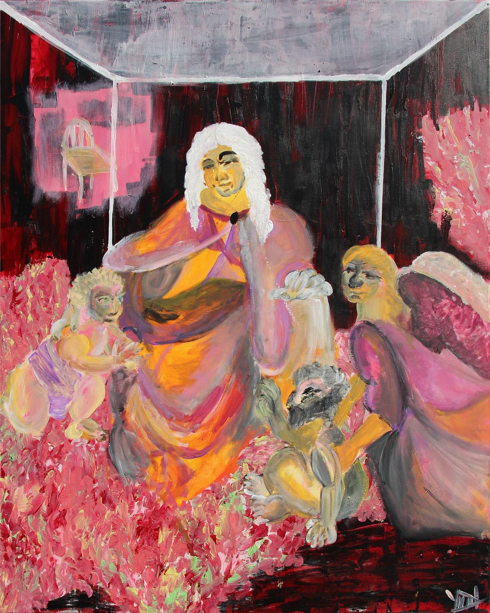
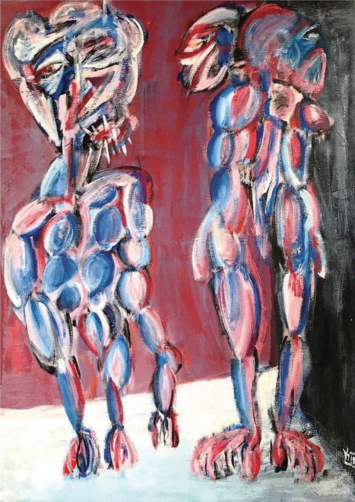
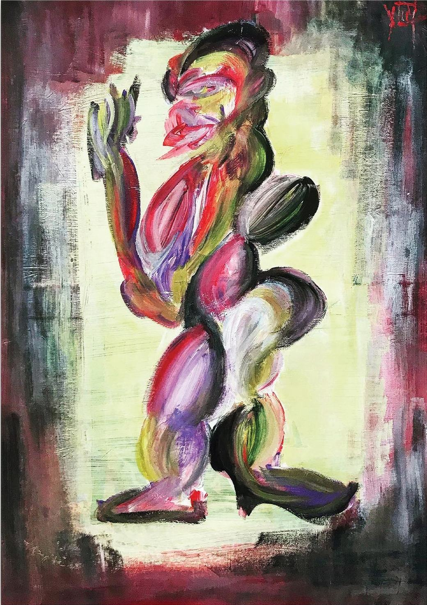
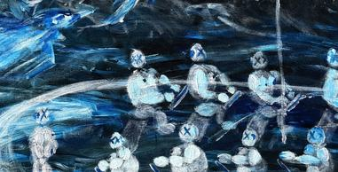
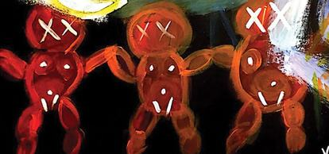

YİĞİT ÖZEN
Thirty-five works
Paintings
since 2019
since 2019
Istanbul · Milan · Luxembourg
yigitozen.xyz
The thirty-five paintings are given newest first, so the seven years are read backwards. A paragraph that says a thing happens for the first time means the first time reading backwards through the book.
Every work has a spread of its own. The left page carries the number, the medium, the title, the dimensions and a paragraph, and at its foot three notes on colour, composition and hand. The right page carries the painting, and every painting in the book is reproduced inside one band, so their sizes on the page can be compared.
Where a work was photographed in detail, its details follow on their own sheets, each with one line saying where in the painting it is. Where the stages of the work were photographed, they follow as a contact sheet. Sheets of paper and earlier paintings of the same scene are given as studies and versions.
Dimensions are width by height, in centimetres, then in inches.
One side stands wrapped, each cone clear of the next; the other is stacked two and three high until one head cannot be told from another. Those are the two ways of being a family available on this board, and the game is between them. Nothing has been taken off, so whatever is being played is not the kind of game that ends with a winner. The larger of the two heads has neither eyes nor a mouth; the small one opposite it is all glare.

The cage is drawn, not built. A few white lines lay a ceiling across the top and drop two uprights, then stop two fifths of the way down, so nothing is actually shut in. Underneath, the bodies are soft, pressed from the tube and scratched while still wet, and not one of them looks at the lines. The title carries a guide out of the underworld and a file name that has been saved as final nine times over: two promises of an ending, made by something that has none.

The flock is already committed, every wing swept the same way down the diagonal, and the row of figures standing along the boat does not look up. Each of them has an X where the eyes should be, so there is nobody aboard to see it coming. The anchor lies in the corner with its chain beside it. One thin figure at the centre holds the pole, which is the only act in the painting, and it cannot be told whether it is steering or holding on.

The pointed teeth ranged in the open mouth of the figure on the left stand as the one sharp edge within the softness of the rest of the painting. The title gives this mouth a sentence: hello boss, I am the shark. An Italian and overly cheerful greeting, the opening line of someone introducing himself as a predator.

A dark band closes in from all four sides and leaves within it a light green rectangle between lemon and pistachio, setting up a second frame inside the painting. The figure is placed right in the middle of that bright field, standing in profile.

A peach-coloured body stands doubled over on a diagonal running from lower left to upper right, its heaviest mass gathered right at the level of the belly, the legs that bear it thin and long; the borne is heavy, the bearer weak.

A greenish body is spread horizontally and no border is drawn between it and the blue beneath; where the body ends and where the water begins is unclear. The arms are open, the legs hang, no trace of resistance. Whether it is sinking or swimming, the painting does not say.

The stretcher bars and the central rail are visible just as they are; two female figures are drawn in charcoal on the unpainted back face of the canvas, that is the side normally left turned to the wall.

Cogs, and they believe in the work
A small figure turns up in eight of these paintings, built from stacked circles, an X drawn over each eye and in one of them a mouth stitched shut. It is never the subject. It stands at the foot of the heap, in a row along a boat, hung upside down in a corner, ranged across a board.
They are the functionaries. Emptied of anything of their own, put there to serve a purpose, and, as far as anything in the painting shows, convinced they are doing some good. The X is not violence done to them; it is the condition of the job. Present at the scene, and unable to report it.







All works by Yiğit Özen, born 1994 in Istanbul and trained as an architect. They are given newest first, so a paragraph that says a thing happens for the first time means the first time reading backwards through the book.
Dimensions are width by height, in centimetres and then in inches.
Photography by the artist. Plates and details reproduce documentation of the paintings; colour and surface differ from the works themselves. The files are set at about 137 pixels to the inch of printed width, which is made for reading and for screens rather than for offset printing.
Detail photography exists for fourteen of the thirty-five. Where it does not, the work is given its spread and nothing more; no detail has been cropped out of a plate to fill a page.
Where a paragraph gives a proportion or a percentage, it was measured on the documentation file rather than on the painting, and it describes that file. No colour target was used in the photography, so the figures are a reading of the photograph and not a colorimetric claim about the paint.
Titles are set as the artist writes them, in his spelling and his punctuation. il sbagliato di rompipalle, sono squalo and caprocorn are his, not slips of the setting.
Sources for the two borrowed reference images and for the epigraph on 03 are given on the pages they appear on.
Set in Inter, under the SIL Open Font License. A short selection of the same works is published separately for sending; the thirty-five are also at yigitozen.xyz, where every photograph can be seen at full size.
All works © Yiğit Özen. All rights reserved.